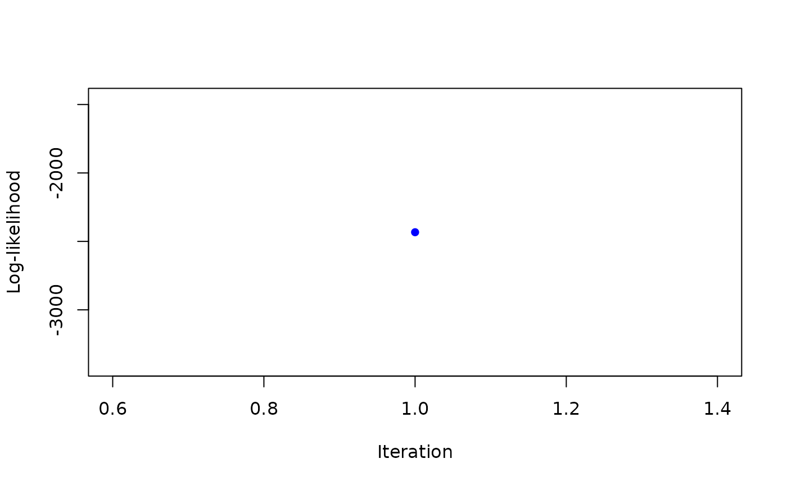
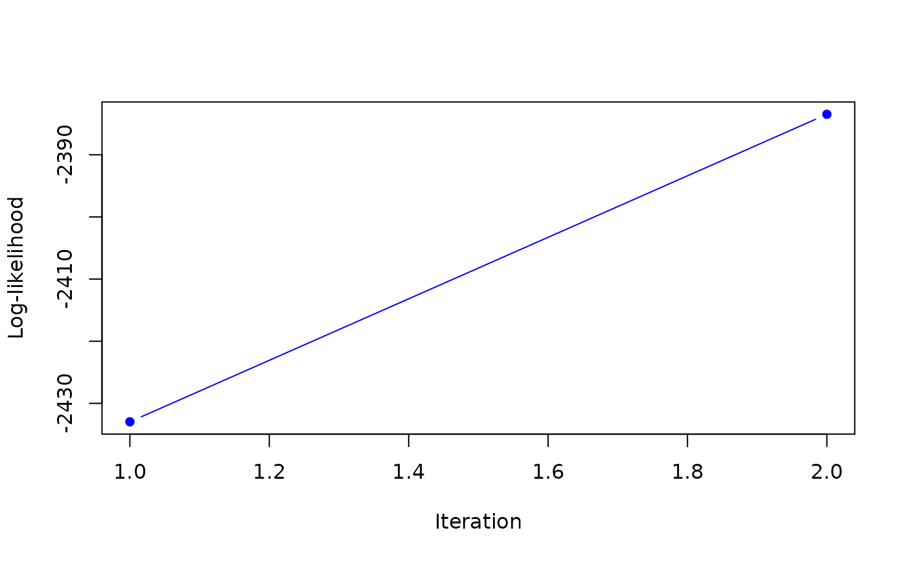
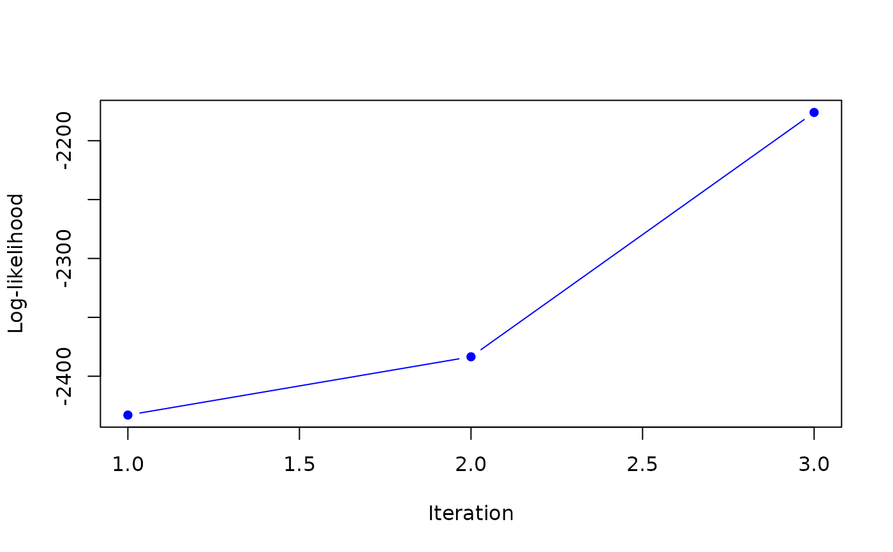
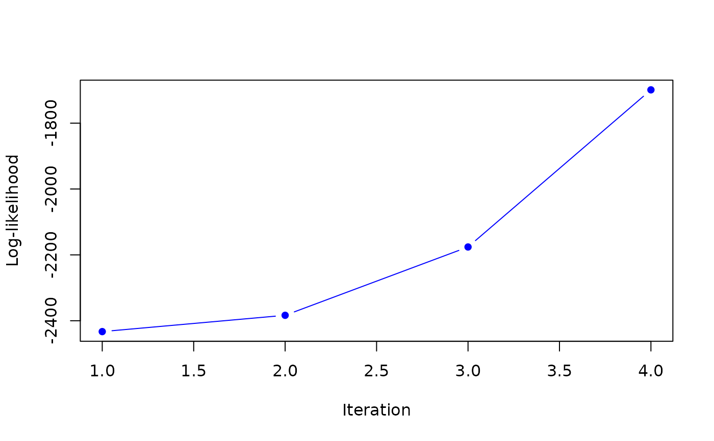
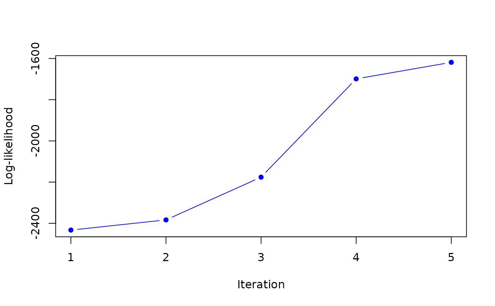
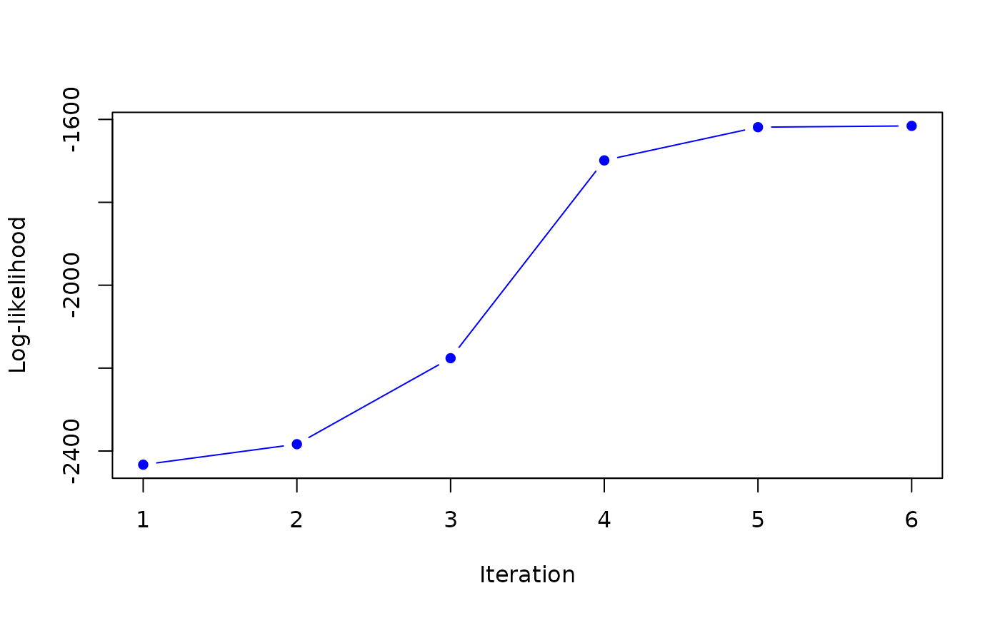
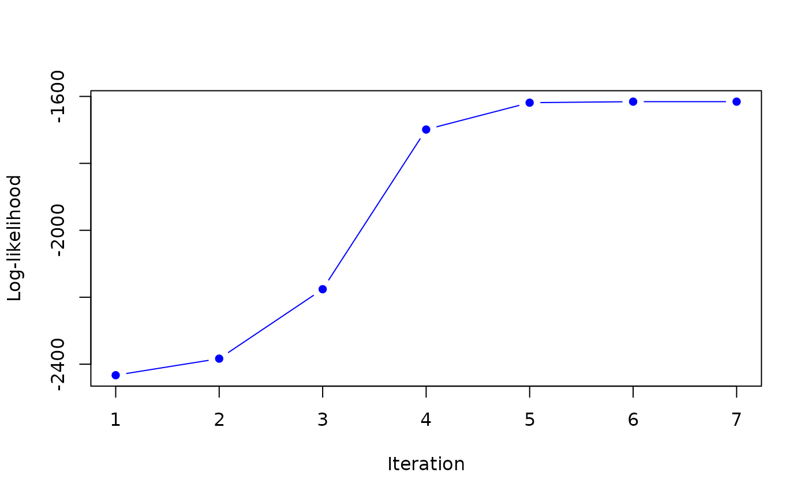

Maximum A Posteriori (MAP) estimation of mixture of Normal inverse Wishart distributed observations with an EM algorithm
Usage
MAP_sNiW_mmEM(
xi_list,
psi_list,
S_list,
hyperG0,
init = NULL,
K,
maxit = 100,
tol = 0.1,
doPlot = TRUE,
verbose = TRUE
)
MAP_sNiW_mmEM_weighted(
xi_list,
psi_list,
S_list,
obsweight_list,
hyperG0,
K,
maxit = 100,
tol = 0.1,
doPlot = TRUE,
verbose = TRUE
)
MAP_sNiW_mmEM_vague(
xi_list,
psi_list,
S_list,
hyperG0,
K = 10,
maxit = 100,
tol = 0.1,
doPlot = TRUE,
verbose = TRUE
)Arguments
- xi_list
a list of length
n, each element is a vector of sizedcontaining the argumentxiof the corresponding allocated cluster.- psi_list
a list of length
n, each element is a vector of sizedcontaining the argumentpsiof the corresponding allocated cluster.- S_list
a list of length
n, each element is a matrix of sized x dcontaining the argumentSof the corresponding allocated cluster.- hyperG0
prior mixing distribution used if
initisNULL.- init
a list for initializing the algorithm with the following elements:
b_xi,b_psi,lambda,B,nu. Default isNULLin which case the initialization of the algorithm is random.- K
integer giving the number of mixture components.
- maxit
integer giving the maximum number of iteration for the EM algorithm. Default is
100.- tol
real number giving the tolerance for the stopping of the EM algorithm. Default is
0.1.- doPlot
a logical flag indicating whether the algorithm progression should be plotted. Default is
TRUE.- verbose
logical flag indicating whether plot should be drawn. Default is
TRUE.- obsweight_list
a list of length
nwhere each element is a vector of weights for each sampled cluster at each MCMC iterations.
Details
MAP_sNiW_mmEM provides an estimation for the MAP of mixtures of
Normal inverse Wishart distributed observations. MAP_sNiW_mmEM_vague provides
an estimates incorporating a vague component in the mixture.
MAP_sNiW_mmEM_weighted provides a weighted version of the algorithm.
Examples
set.seed(1234)
hyperG0 <- list()
hyperG0$b_xi <- c(0.3, -1.5)
hyperG0$b_psi <- c(0, 0)
hyperG0$kappa <- 0.001
hyperG0$D_xi <- 100
hyperG0$D_psi <- 100
hyperG0$nu <- 20
hyperG0$lambda <- diag(c(0.25,0.35))
hyperG0 <- list()
hyperG0$b_xi <- c(1, -1.5)
hyperG0$b_psi <- c(0, 0)
hyperG0$kappa <- 0.1
hyperG0$D_xi <- 1
hyperG0$D_psi <- 1
hyperG0$nu <- 2
hyperG0$lambda <- diag(c(0.25,0.35))
xi_list <- list()
psi_list <- list()
S_list <- list()
w_list <- list()
for(k in 1:200){
NNiW <- rNNiW(hyperG0, diagVar=FALSE)
xi_list[[k]] <- NNiW[["xi"]]
psi_list[[k]] <- NNiW[["psi"]]
S_list[[k]] <- NNiW[["S"]]
w_list [[k]] <- 0.75
}
hyperG02 <- list()
hyperG02$b_xi <- c(-1, 2)
hyperG02$b_psi <- c(-0.1, 0.5)
hyperG02$kappa <- 0.1
hyperG02$D_xi <- 1
hyperG02$D_psi <- 1
hyperG02$nu <- 4
hyperG02$lambda <- 0.5*diag(2)
for(k in 201:400){
NNiW <- rNNiW(hyperG02, diagVar=FALSE)
xi_list[[k]] <- NNiW[["xi"]]
psi_list[[k]] <- NNiW[["psi"]]
S_list[[k]] <- NNiW[["S"]]
w_list [[k]] <- 0.25
}
map <- MAP_sNiW_mmEM(xi_list, psi_list, S_list, hyperG0, K=2, tol=0.1)
#> it 1: loglik = -2432.972
#> weights: 0.2966973 0.7033027
#>

#> it 2: loglik = -2383.489
#> weights: 0.3230128 0.6769872
#>

#> it 3: loglik = -2176.02
#> weights: 0.3674474 0.6325526
#>

#> it 4: loglik = -1698.888
#> weights: 0.4293908 0.5706092
#>

#> it 5: loglik = -1618.705
#> weights: 0.4831102 0.5168898
#>

#> it 6: loglik = -1615.645
#> weights: 0.4954632 0.5045368
#>

#> it 7: loglik = -1615.66
#> weights: 0.497025 0.502975
#>
